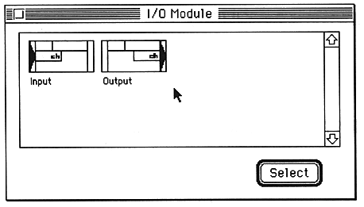
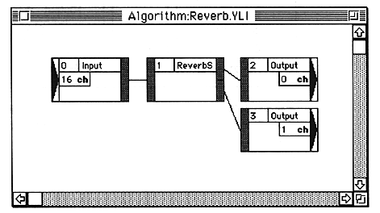
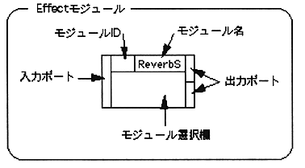
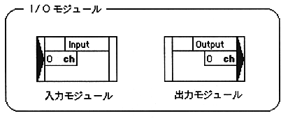
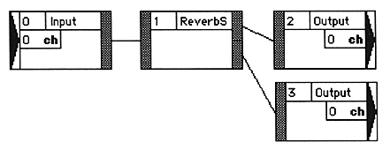
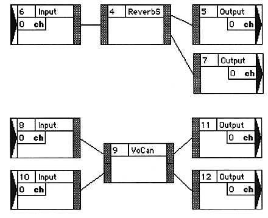
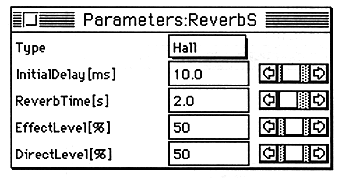
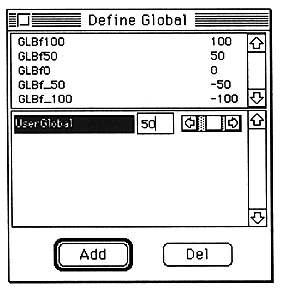
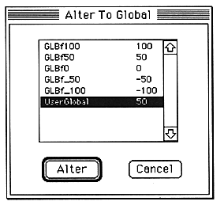
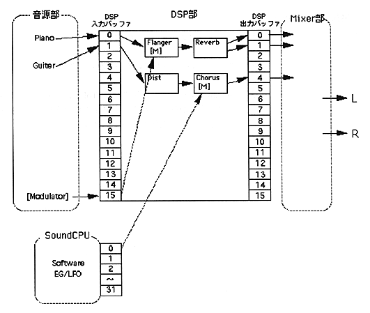

★SOUND Manual
★SCSP/DSPリンカユーザーズマニュアル
★SOUND Manual
★SCSP/DSPリンカユーザーズマニュアル
入出力モジュールを配置する場合はWindowメニューから“I/OModules”を選択します。
エフェクトモジュールを配置する場合はWindowメニューから“EffectModules”を選択します。
モジュール選択ウインドウが開かれます。

モジュール選択ウインドウから配置したいモジュールをクリックして“Select”ボタンをクリックするか、モジュールをダブルクリックします。
アルゴリズムエディットウィンドウの最後にクリックした位置に、モジュールが配置されます。一度もアルゴリズムエディットウィンドウでクリックしていない場合は右上隅に配置されます。
配置されたモジュールをドラッグして適切な位置に移動させます。
1つ目のモジュールのポートをクリックします。
ポートとそこにつながる結線が選択状態になります。
結線を削除するときは、deleteキーを押すかEditメニューの“Clear”を選択してください。
2つ目のモジュールのポートをクリックします。
1つ目のポートと2つ目のポートが結線されます。
2つ目のポートをクリックしたときに、結線できるかどうかのチェックが行われます。結線できない場合は、1つ目の選択が解除されて2つ目のポートが選択状態(1つ目とみなされる)になります。
たとえば、次のように結線することができます。

| 結線の操作では、以下のことにご注意ください。 |




モジュールの選択欄をダブルクリックします。
パラメータエディットウインドウが表示されます。

スクロールバーをマウスで動かすか、値の表示枠内をクリックしてから数値を直接入力して、値を変更します。


GlobalCoefメニューから“DefineGlobal”を選択します。
DefineGlobalウインドウが開かれます。
“Add”をクリックすると追加され、“Del”をクリックすると選択されているものが削除されます。
値を変更するときは、キーボードから入力するかスクロールバーを使ってください。
パラメータエディタ画面で、グローバルにしたいパラメータを選択します。
GlobalCoefメニューから“AlterToGlobal”を選択します。
AlterToGlobalウインドウが開かれます。
使用するグローバルを選択して“Alter”をクリックします。
グローバルが確定し、パラメータエディットウインドウに戻ります。
パラメータエディットウインドウでは、値の表示欄に選択したグローバルが表示されます。
パラメータエディットウインドウを開きます。
グローバル指定されている係数から、グローバルを解除するものを選択します。
GlobalCoefメニューから“RevertToLocal”を選択します。
グローバルが解除されます。解除された係数の係数値表示欄には、グローバルで指定されていた値が表示されます。
モジュールの“M”をクリックします。
モジュレータ用入力バッファ設定ダイアログが表示されます。
バッファの番号を指定して“OK”をクリックします。
バッファの番号が設定されます。

★SOUND Manual
★SCSP/DSPリンカユーザーズマニュアル